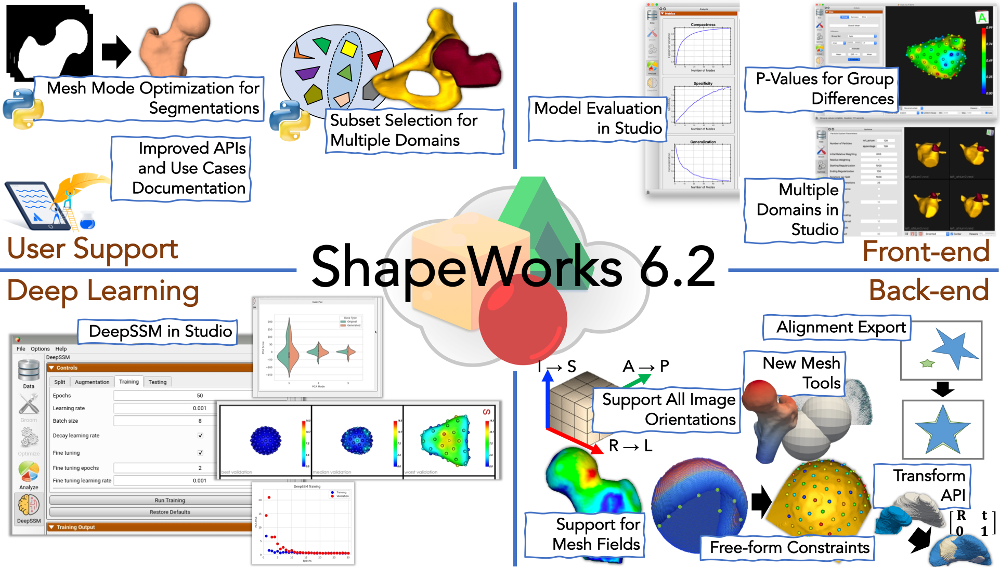
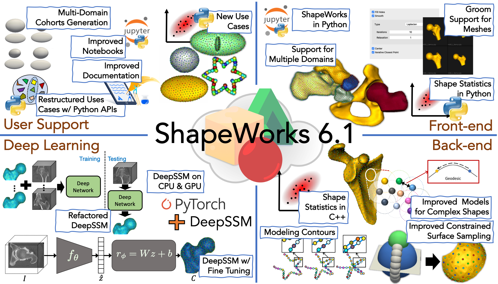
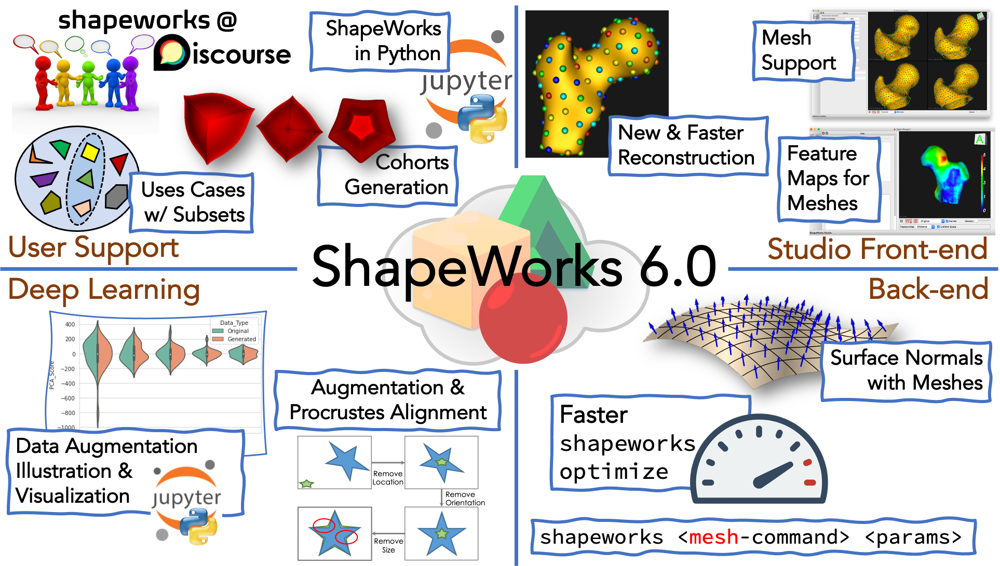

Release Notes
ShapeWorks 6.2.1 - 2022-01-07
What is new?
- ShapeWorks Back-end
- Added new
isolatefunctionality that isolates the largest object in a segmentation - Added remeshing using ACVD library
- Added option to save mesh file as binary (default is ASCII)
- Uniform transform interface added: ITK transforms can be applied to meshes and VTK transforms can be applied to images.
- Added new
- ShapeWorks Front-end
- Studio: Added convert to mesh pipeline for segmentation inputs (can run both image and mesh pipelines)
- Studio: Added reflection, remeshing, image cropping, image resampling to grooming
- Studio: New UI for grooming
- User's Support
- Updated
ellipsoid_meshuse case to demonstrate mesh grooming - Combined the functionality of the three femur use cases -
femur,femur_mesh,femur_cutinto one use case. Thefemur_cutuse case now demonstrates the process of grooming meshes and the associated images , optimization on meshes with a single cutting plane as a constraint.
- Updated
Fixes
- Studio: Fixed display names in the corner (removing long paths)
- Studio: Fixed recomputation of shape statistics upon re-running shape model and removing shapes
ShapeWorks 6.2 - 2021-11-16

What is new?
ShapeWorks Back-end
-
New
Meshgrooming tools:
The following grooming tools are supported from all three different interfaces - command line, C++ and Python:curvature: computes curvature (types include principal, gaussian, and mean curvature) of a given triangular mesh and returns a field that contains a scalar value for each mesh vertex. See mesh-curvature to know about function parameters.fixElement: fixes element winding of a given triangular mesh as a quality control step for preparing meshes for shape modeling. See fix-element to know about function parameters.geodesicDistance: the computation of geodesic distances enables feature-based correspondences. Read this paper for more details. Below are exemplar usage scenarios.geodesicDistance (pointA, pointB): computes geodesic distance between 2 points on a triangular mesh. See geodesic-distance to know about function parameters.geodesicDistance (landmark): computes geodesic distances between all points on a triangular mesh to a given point (landmark). See geodesic-distance-landmark to know about function parameters.geodesicDistance (curve): computes geodesic distances between all points on mesh and set of points (curve)
computeMeanNormals: computes the average surface normal for each mesh vertex in a given set of triangular meshes with vertex-wise correspondences and returns a field containing a normal vector for each mesh vertex. See mean-normals to know about function parameters.
-
New
Meshquery/operator tools:
The following tools are supported from all three different interfaces - command line, C++ and Python:operator+=: appends a mesh to an existing mesh. The result of this operator is a single mesh with a single vertex and face lists.closestPoint: returns the closest point on a face in the mesh to a given point in space. See closest-point to know about function parameters.closestPointId: returns closest point id in the mesh to a given point in spacepoints: returns matrix with number of points with (x,y,z) coordinates of each pointfaces: returns matrix with number of faces with indices of the three points from which each face is composedgetFace: return indices of the three points with which the face at the given index is composed
-
Meshfields: Added support for passing multi-valued fields in addition to scalar fields. Previously field operations such asgetField,setFieldsupported only single-value components. Now, these operations can be used for multi-valued components as well. This is useful for associated surface meshes with positional (i.e., spatially varying) features, e.g., application-specific features such as cortical thickness and bone density, and computationally driven features such as geodesics to anatomical landmarks, curvatures, and surface normals. -
Free-form constraints (FFCs): FFCs support has been added. Added a unit test for FFCs, a typical sphere unit test with a constraint that cuts the sphere like a tennis ball grove. Also added a unit test with two domains, both spheres in different locations. The first sphere has one cutting plane and 25 sphere constraints, and the second sphere has one cutting plane and one free form constraint. See Free-Form Constraints for more details.
ShapeWorks Front-end
-
Multiple domains in Studio: Support for multiple alignment strategies is now present in Studio. It allows analysis with and without articulation with a choice of reference domain or global alignment. See Multiple Domain Alignments
-
New analysis features in Studio: Shape evaluation charts for compactness, specificity, and generalization have been added. See for Metrics Panel more details.
-
Usability features in Studio: New usability features such as group p-value display, feature map scalar control, surface opacity controls on a per doamin basis, message history window, suppressible error dialog, narrow band optimization parameter, multiple domain expore options (combined and support) and allow initial landmark points. See New in ShapeWorks Studio 6.2 for more details.
User's Support
-
Shape cohort generation: Added segmentation and image generation for 2D contour supershapes. See this Jupyter Notebook for more details.
-
Analyzing the group differences: A new use case has been added, demonstrating the functionality of shape statistics tools to perform hypothesis testing of group shape differences. See Femur: Group Difference Statistics in Python for more details.
-
Sub-sampling for multiple domains: We can now perform subsampling for multiple domains data by combining the individual shapes from all the domains and generating combined shapes. We perform a clustering-based subset selection on the combined shapes so that the subset is representative of the entire dataset and all domains. The representative subset of the specified sample size will be helpful to run through the SSM pipeline so that the use case runs faster and uses less memory.
-
API reference in Documentation: Information about different classes (e.g Image), functions (e.g Image::antialias), function parameters, function return types in C++ API has been added. Check out Groups, Classes, Namespaces, Files for more details.
Deep Learning
- DeepSSM in Studio: The ability to run DeepSSM has been added to Studio. See DeepSSM in Studio for more details.
Improvements
ShapeWorks Back-end
-
Safe construction of
Imageinstances in Python: Images can now be safely constructed without copying and passed without copying from/to Python. In particular, passing Images for rendering usingpyvistais now transparent and copy-free (note: copying is still supported if necessary). A Jupyter Notebook was added to demonstrateImageinitialization and passing. -
Efficient data sharing between Python and C++: Added efficient sharing of large data between Python and C++ (for both
Meshfields andImagedata) that enables Python tools which accessMeshfields orImagedata for visualization and analysis, or wish to create an Image or add fields from NumPy to aMesh, to do so with optimal efficiency without fear of memory leak due to mishandled transfers. -
Improved Python APIs:
Coordsysof images in Python can now be set usingsetCoordsys. Fixed Python bindings and improved interactive help where necessary. More efficient conversion of shapeworksMeshin Python to vtk mesh by creating aPolyDatainstead of performing IO operations. -
Transforms in
ImageandMeshAPI: Separate transforms such as center of mass, rigid registration and thin plate spiline can be created. They are passed efficiently and transparently between Python and C++. These transform functions create and accept numpy arrays instead of using proprietary transform type in the Python API. A jupyter notebook was to demonstrate this for images and meshes. -
Optimizer exports alignment transforms: Write individual procrustes transforms. The ShapeWorks
Optimizercan now export individual procrustes transform files if requested. Use the xml tag<write_transform_files> 1 </write_transform_files>to enable it. Additionally, for project spreadsheets (e.g., Studio), individual procrustes transforms will be added as additional columns in the data sheet. See Optimize for more details. -
Improved testing: More robust testing of Python tests was achieved by adding code to ensure that all tests are performed for all functions, whereas before the test failure was reported immediately without testing if any related functions failed. Concrete seeding of random number generators (only for testing) is utilized to ensure objective comparison of results across all platforms. Improved verification of use case testing by comparing shape statistics compactness, generalization, and specificity against a good shape model instead of checking for a file. A log file (
verify.log) is written that contains the use case outputs and summary.
User's Support
-
Use cases: Added
--mesh_modeoption to image-based use cases. When running in mesh mode, after grooming segmentations, distance transforms are converted to meshes, and optimization is done directly on meshes, saving memory footprint and allowing the usage of geodesic distances for particle repulsion. This enables improved modeling for thin structures and high curvature regions. See Use Case Documentation for more details. -
Improved use cases documentation: Restructured use cases documentation to reduce repetition and better highlight the focus and differences of each demonstration. Added relevant documentation links for every step and parameter in use case descriptions. Reorganized use case documentation based on category (i.e., mesh-based, constraint-based, etc.). See Getting Started with Use Cases for information on running use cases and Examples for an overview of released use cases. More explanation of interpreting modes of variation in Shapes. What & From Where?.
-
Restructured
ellipsoid_evaluateuse case: The computation time for calculating specificity, compactness, and generalization metrics have been dramatically reduced. A 50X speedup was experienced when calculating evaluation metrics for all modes for a dataset with 75 shapes, each with 1024 particles. We can now calculate the evaluation metrics for all the modes or query the values for a specified mode. The use case has been modified to demonstrate these functionalities. See Ellipsoid: Shape Evaluation in Python for more details.
Fixes
ShapeWorks Back-end
- Memory leak: Fixed memory leak issues in
FEMeshoperations
ShapeWorks Front-end
- Fix processing of all orientation images: We have fixed ShapeWorks to handle all orientations of images. Previously, only a subset (such as RAI) was fully compatible with all tools.
ShapeWorks 6.1 - 2021-06-28

What is new?
ShapeWorks Back-end
- Improved shape models for convoluted structures: Geodesic distance-based repulsion is now supported for mesh domains. This improves results on structures with thin and/or convoluted features at the cost of increased memory and runtime. Refer to the
thin_cavity_beanuse case for an example. - Optimizing shape models on contours: N-dimensional contour domains are now supported in ShapeWorks. Refer to the
supershapes_1mode_contouruse case for an example. - Robust and scalable primitive-based constrained surface sampling: Constraints are now implemented by turning the problem into an unconstrained optimization using the augmented lagrangian inequality formulation. The new implementation supports both cutting planes and spheres. It also supports multiple constraints per domain/shape with different types.
- Consolidated library for shape statistics: The
shapeworkscomputational library is updated to include refactored code for shape statistics, including functions to read particle files and compute eigenvectors, eigenvalues, and PCA loadings.
ShapeWorks Front-end
- Grooming support for meshes in Studio: Multiple grooming features for mesh domains are added to Studio, including two methods for mesh smoothing, hole filling, mesh centering, and iterative closest point for rigid pre-alignment with automated reference shape selection.
- Multiple domains support in Studio: Multiple domains are added to Studio where shape models are optimized in the given domains' shared/joint shape spaces to capture inter-domains correlations and interactions. The way multiple domains are implemented allows for an arbitrary number of domains as long as all shape samples in a given cohort have the same domains. Furthermore, the multiple domain support enables modeling scenarios with mixed-type domains (e.g., meshes and contours).
- Python APIs for shape statistics: Python APIs for principal component analysis (PCA) are added for shape statistics. These APIs include reading particle files and computing eigenvectors, eigenvalues, and PCA loadings. See
ellipsoid_pcafor a demonstrating example.
User's Support
-
Multi-domain shape cohort generation: Ellipsoid joint generation is added to ShapeWorks' cohort generator python module. Shape cohorts with multiple domains can be generated with options to control the distance separating the domains and modes of variations (size/rotation). These cohorts can be used for troubleshooting multiple domain shape modeling workflows.
-
New use cases: A new use case (
ellipsoid_pca) demonstrating the usage of the new PCA tools is added. Thethin_cavity_beanuse case is added to demonstrate geodesic distance-based particle-to-particle interactions to demonstrate improved shape statistics and surface sampling for thin and convoluted structures. Thesupershapes_1mode_contouruse case is added to demonstrate shape modeling using contour domains. Another two new use cases,ellipsoid_multiple_domainandellipsoid_multiple_domain_mesh, are added to demonstrate a typical shape modeling workflow for multiple domains using binary segmentations and surface meshes, respectively.
Improvements
ShapeWorks Back-end
- Particle splitting is agnostic to constraints: Particle splitting and constraints will no longer require that no particle violates constraints. It will work even if a particle violates a constraint. Multiple unit tests are added.
- Mesh reconstruction for multiple meshes: The warp-mesh command is extended to work with multiple meshes at the same time with the same reference mesh and points.
- Improvements to the
ImageandMeshlibraries: Exact specification of crop regions and clip plane for both images and meshes are enabled. - Better error detection and handling.
- More robust automated testing to ensure improvements do not break existing functionality.
ShapeWorks Front-end
- Multiple domain support:
OptimizeUtilsandAnalyzeUtilsare updated to handle multiple domain datasets. - Restructured use cases: Depreciated
GroomUtils,CommonUtils, andEvaluationUtils. All use cases are restructured to make the grooming steps more transparent and demonstrate the usage of Python APIs with inline documentation. - Improved ShapeWorks Python module library coverage: The entire ShapeWorks library framework now accessible via Python bindings.
- Python types support in ShapeWorks Python module: ShapeWorks Python module uses generic Python types (e.g., numpy, arrays, lists) rather than opaque wrappers for parameters to/from ShapeWorks objects. It is now possible to instantiate shapeworks.Image from a numpy array. One can now request raw image data as a numpy array.
- Safe dot-chain operations in ShapeWorks Python module: The “dot chain” operations are now safely enabled (e.g.,
img.translate([tx, ty, tz]).rotate(45, shapeworks::Z).scale([sx, sy, sz))) RunUseCaseimprovements:RunUseCaseno longer requires--use_casebefore the use case name. This makes it simpler to use since omitting a use case name immediately prints help, which itself shows the list of use cases as a required argument rather than listing them with the other optional args.RunUseCaseno longer accepts paths to shapeworks executables or Python modules. All of these are in the user's conda environment, or set using thedevenvfor testing by developers.
Deep Learning & Shape Modeling
- Refactored DeepSSM: Defined a config file for DeepSSM parameters that are used in training and testing. This will be helpful for parameter tuning, model comparison, and adding additional functionality and parameters to DeepSSM.
- DeepSSM with fine-tuning: A fine-tuning option has been added to DeepSSM. This allows the model to learn the mapping between the PCA space to the correspondence point space, improving accuracy.
- Improved DeepSSM evaluation: DeepSSM evaluation has been adapted to use ShapeWorks mesh warp function and Python binding mesh distance function.
- DeepSSM on both GPU and CPU: The DeepSSM use case has been adapted to run on both GPU and CPU. It is considerably faster on GPU but no longer exits when running on CPU.
User's Support
- Improved documentation: More clear documentation both from Python, the command line, and online are added.
- Improved notebooks: Notebooks are significantly simplified by moving helper functions into the ShapeWorks Python module, reducing redundant information, and using only the PyVista library for visualization.
- Improved installation: Users no longer are required to modify PATHs or pass parameters to find executables or import the ShapeWorks Python module. Installation works even if non-standard installation directories are used and it works on all platforms.
- New shapeworks environments can now be created using
install_shapeworks [name]: This supports multiple installations on the same platform, where users can change installation just by activating a different conda environment. - Clean installation for ShapeWorks Python module: ShapeWorks Python module is now seamlessly installed as part of ShapeWorks suite installation on all platforms. The Python module no longer requires any special path modifications to import.
Fixes
ShapeWorks Back-end
- Image to Array: ShapeWorks image functionality is fixed such that an image can be successfully converted to a numpy array and back to a ShapeWorks image.
ShapeWorks Front-end
- Notebook visualization: Volume renderings using ITK Widgets were causing notebooks to crash on some platforms. The notebooks are now updated to no longer use ITK Widgets for visualization and instead use the more robust and stable PyVista library.
- Use case file writing: RunUseCase.py has been updated to check that the current folder is writable before proceeding so that use case output can be saved.
Deep Learning & Shape Modeling
- DeepSSM evaluation: The DeepSSM evaluation step in the use case is updated to use ShapeWorks mesh distance rather than the deprecated SurfaceToSurfaceDistance command.
ShapeWorks 6.0 - 2021-03-30

What's New
User's Support
- New discussion forum: We started an online discussion forum (shapeworks.discourse.group). This forum is a place for ShapeWorks users to discuss how to customize shape modeling workflows for their own use cases, troubleshoot issues end-users facing when using ShapeWorks, keep track of suggestions to improve the software and documentation, and ensure awareness of the latest ShapeWorks tools within the research community.
- Tiny tests for use cases: All use cases now have a tiny test that can be run using the
--tiny_testoption. When the tiny test is run, only the data necessary for the test is downloaded rather than all of the data. - Running use cases on subsets: All of the use cases (mesh or segmentation based) can now be run on a subset of the data using the
--use_subsampleoption. Note that the entire dataset is downloaded in this case so that a subset that is representative of the entire dataset can be selected. - Generating shape cohorts: Example shape cohorts with analytic correspondences can now be generated using the ShapeWorks package
GenerateShapeCohort. Currently, cohorts of parameterized ellipsoids or supershapes can be generated. Options are available to specify the degree to which the cohort is groomed (i.e., a cohort can be generated to be in alignment or misaligned in various ways). These cohorts can help with troubleshooting the shape modeling workflow. - Notebook demonstrating cohort generation: A Jupyter notebook was added that demonstrates how to use GenerateShapeCohort.
ShapeWorks Back-end
-
Support for use_normals with meshes: Added support for surface normals when optimizing directly on meshes. This results in improved shape models on thin domains. See ShapeWorks Directly on Meshes for more details.
-
Consolidation of mesh-based grooming tools: Updated the
shapeworksAPI to include mesh-based grooming tools (smooth, decimate, invert normals, reflect, alignment, fill holes, probe volume at mesh vertices, clip, translate, scale, bounding box, quality control, surface to surface distance, to image and to distance transform). Added mesh-based query tools (center, center of mass, number of points, number of faces, get field names, set field, get field, set field value, get field value, get field range, get field mean, get field std and comparison). This includes a full complement of unit tests.
All-in-one Studio Front-end
- Mesh support in Studio: Added support for mesh inputs with minimal grooming. See New in ShapeWorks Studio for more details.
- New and faster surface reconstruction: Added a new surface reconstruction method with support for both mesh or image inputs. This method is much faster and is the new default. See New in ShapeWorks Studio for more details.
- Feature maps support for meshes: Added support for loading and displaying scalar values from mesh inputs. See New in ShapeWorks Studio for more details.
- User help in Studio: Added user interface tooltips and Help->Keyboard shortcuts.
- Detailed optimization progress: Added particle count, initialization/optimization phase, and iteration count on the status bar in addition to the progress bar. (user feature request)
- Enabled aborting grooming: Added ability to abort grooming step.
Deep Learning & Shape Modeling
- DeepSSM now saves both the "best" and "final" model: The final model is saved after all training epochs have run. The best model is saved after the epoch that had the lowest prediction error on the validation set. The best model makes use of early stopping to prevent overfitting.
- Visualization of DeepSSM errors: The error meshes that are output from running the DeepSSM use case can now be visualized in Studio. These meshes have a distance scalar field that captures the distance between the true and predicted mesh. To view in Studio simply run:
ShapeWorksStudio path/to/error/mesh.vtk. - Data augmentation handles modeling scenarios that need Procrustes alignment: Data augmentation can now be run on a dataset for which Procrustes was used in optimization. When both the local and world .particle files are passed as arguments for data augmentation, the translation is accounted for in the augmented data.
- Visualizing data augmentation: Parallel violin plots are used to compare the distribution of real and augmented data visually.
- Demonstrating data augmentation: A Jupyter notebook that demonstrates the data augmentation process has been added. In this notebook, parallel violin plots are used to compare the distribution of real and augmented data visually.
Improvements
User's Support
- Improved Python grooming utils: GroomUtils.py now uses Python binding rather than calling command-line tools.
ShapeWorks Back-end
- Enable multi-threading on Mac platforms: Switched from OpenMP to TBB (thread building blocks), allowing multithreading on Mac. Performance improvements include a ~4x speedup on Mac laptop and same speed or better on Linux/Windows.
- Performance improvements in
shapeworks optimize: ~20% faster optimization in mesh and image domains by replacing specific data structures (that were initially in place to allow interactive removal of particles during the optimization). ~50% faster optimization in mesh domain by caching nearest-triangle lookups.
All-in-one Studio Front-end
- Improved Studio viewer: Added ability to use 2 viewers (in between 1 and 4). Added ability to choose orientation marker (medical, triad) and location (corner).
- Improved Studio interface: Added new checkbox for automatic glyph sizing. Added support for drag and drop of images and meshes. Scalar bar color is now opposite of background color (e.g., when the background is white, the text should be dark) (user request).
- Improved responsiveness: Improved particle shape statistics computation speed. Improved user interface responsiveness during optimization. Improved distance transform loading for surface reconstruction.
- Improved error handling: Enhanced error handling and graceful reporting of errors such as attempts to write/save to read-only directories and filesystems.
Deep Learning & Shape Modeling
- More control on data augmentation: In data augmentation, the user can now either specify how many PCA components to retain in embedding OR what percentage of population variability to retain. For example, suppose the user specifies that 95% of population variability should be kept. In that case, the number of components will be automatically selected such that less than 5% of shape variation is lost in embedding.
Fixes
ShapeWorks Back-end
- Replaced mesh library: Replaced backend mesh library to fix bugs that caused optimizer crashing when optimizing particles directly on meshes.
- Gradient of normals for image domain: Corrected a long-standing bug where we used the hessian in place of the gradient of the normal. If you have an existing use case with use_normals enabled, the normal weighting may have to be adjusted.
- Cutting planes constraints for mesh domains: Fixed a bug in the integration of mesh domains with cutting planes constraints, where the optimization gets stuck due to the fact that constraints get violated when not being considered by geodesic walks.
All-in-one Studio Front-end
- Fixed bugs in Data: Fixed a bug when adding and removing shapes. Studio now appends
.xlsxwhen saving a project file. - Fixed bugs in Optimize: Studio optimize default for initial relative weighting is smaller than relative weighting to enable a better surface sampling during initialization. Enable file menu when the optimization is aborted.
- Fixed bugs in Analyze: Limit PCA modes to the number of samples - 1. Surface reconstruction for spheres is fixed. Fixed a bug that produced blank screens and error messages on the consoles when switching out of analysis while PCA animation is running. Fixed a sample display bug that occurred when loading XML project for analysis and exploring individual samples after switching to PCA animation.
ShapeWorks 5.5.0 - 2020-10-15

What's New
User's Support
-
Revamped documentation: New documentation to support both end-users and open-source developer community in one easily navigable place. This documentation includes background information about statistical shape modeling, the scientific premise of ShapeWorks, and how to get started. It also demonstrates the latest software features, exemplar use cases, and instructions to build/install ShapeWorks.
-
Optimized shape models for use cases: All datasets on the ShapeWorks Data Portal now have the shape model output from running the use cases with a corresponding
analyze.xmlfor launching Studio. Users cancdto where the data is extracted and callShapeWorksStudio analyze.xmlto visualize these shape models.
ShapeWorks Back-end
-
ShapeWorks directly on meshes: ShapeWorks now supports particle optimization directly on triangular surface meshes. This mesh support also enables working with open meshes without additional user inputs. See ShapeWorks Directly on Meshes for more details. For exemplar use cases, see Femur Mesh: SSM directly from meshes and Lumps: SSM directly from meshes to learn how to get started. This mesh support allows for significant memory savings (9.2GB to 53MB in the femur use case).
-
New ShapeWorks API: Consolidation of image-based and segmentation-based grooming tools that creates a stable and reusable API making it much easier and more flexible for users to groom their datasets. This includes a full complement of unit tests. See ShapeWorks API for more details.
All-in-one Studio Front-end
-
Feature maps support: Studio supports the integration of 3d volume feature maps to map imaging data to the optimized shape model. See New in ShapeWorks Studio for more details.
-
New interface for group analysis: Studio supports group definitions from spreadsheets. The new interface supports multiple group sets within the same project file and categorical groups compared to the old binary groups (i.e., yes/no) setting. See New in ShapeWorks Studio for more details.
-
User notes in Studio: Studio stores/loads a rich text notes section in the spreadsheet.
Deep Learning & Shape Modeling
-
New Python package for model-based data augmentation: A Python package for data augmentation has been added. See Data Augmentation for Deep Learning for more details.
-
DeepSSM Python package: A Python package has been added for a deep learning framework that estimates statistical representations of shape directly from unsegmented images once trained. See SSMs Directly from Images for more details.
-
New DeepSSM use case: We added a new use case called
deep_ssmthat demonstrates data augmentation and deep learning on the femur data. See Femur SSM Directly from Images for more details.
Improvements
User's Support
-
Improved data/output organization for use cases: Use case organization has been updated such that downloaded data goes into one folder (
ShapeWorks/Examples/Python/Data/) and use case output goes into another (ShapeWorks/Examples/Python/Output/). This organization will avoid re-downloading use case datasets if the user deleted the output folder. -
Enable only-shape data for the femur use case: Femur use case demonstrates the processing workflow starting from surface meshes and can now be run without grooming images (in case they are not available). To groom with images, use the
--start_with_image_and_segmentation_datatag. If this tag is not included, images will not be used in grooming.
ShapeWorks Back-end
- Improved constrained particle optimization: An improved implementation for cutting planes that support single and multiple cutting planes per sample has been added. This can be used in modeling scenarios where statistical modeling/analysis is needed for a region-of-interest on the anatomy/object-class at hand without having to affect the input data. See Ellipsoid: Cutting Planes and Femur with Cutting Planes for exemplar use cases.
All-in-one Studio Front-end
- Improved interface design for Studio: User interface improvements to Studio have been added. These improvements include collapsable analysis panels to improve screen usability, a cleaner file menu, an about box that shows website information and software version, and a splash screen that enables the opening of new/recent projects.
Fixes
ShapeWorks Back-end
-
Constraint-aware particles initialization and optimization: The initialization and optimization steps now respect the user-defined constraints when using signed distance transforms. Hence, at no point, particles will violate the constraints, allowing for arbitrarily defined cutting planes.
-
Constraint-aware particles splitting: Added constraint aware particle splitting for signed distance transforms. The particle splitting only occurred towards a single quadrant. This is fixed by allowing particle splits to shift in a different direction for each particle in every domain.
-
Constraint-aware particle projection: Projecting particles on the surface while manipulating/optimizing particle position now respects the user-defined constraints.
ShapeWorks 5.4.1 - 2020-06-15
Fixes
- ShapeWorks Studio: Fixed crash when importing data on a new/blank project.
ShapeWorks 5.4.0 - 2020-06-10
What's New
- New, flexible ShapeWorks project file format: New spreadsheet (XLSX) based project file format that can easily handle multiple shape modeling scenarios. It is now fully integrated into Studio. See the ellipsoid studio example in
Examples/Studio/ellipsoid.xlsxfor an example. - Exporting shape parameters: Added PCA Raw Component Score Export to Studio.
- New Getting Started documentation: New Getting started documentation goes over shape modeling workflow documentation, different ShapeWorks interfaces with a video illustration for Studio.
- Lower memory footprint and faster optimization: ShapeWorks is now using OpenVDB, a more memory-efficient data structure, for signed distance transforms. Along with other refactoring and code optimizations, ShapeWorks now uses 85% less memory (from 57.09GB to 9.67GB in one use case). Additionally, the particle optimizer is now 2X faster.
- Automated development builds: We now offer up-to-date development binary builds that track the master branch, available here. Please understand that these are in-progress development builds, not official releases.
Improvements
- Improved scalability for Studio: Files now loaded on-demand as necessary.
- Restructured datasets portal: Better and more consistent directory structure for use cases datasets. See datasets guidelines for more details. Visit our ShapeWorks Portal to register and download datasets to run use cases.
- Lower memory footprint for estimating correspondences for new shapes on existing shape models: For
usage, only distance transforms for the new shapes will be loaded. - Improved use case documentation: Better documentation for the RunUseCase input arguments.
- Documentation for running existing shape models: Added instructions on how to load a pre-trained shape model without running the full pipeline.
- Consistent cross-platform splitting direction: Correspondence point splits take a random direction, but are now consistent and repeatable across platforms for reproducible shape models.
Fixes
- Mesh export in Studio: Changed exported meshes to be compatible with CloudCompare
ShapeWorks 5.3.0 - 2020-02-20
What's New
- Use cases: Added fixed domains use case that demonstrates adding a single shape to an existing shape model
- Use cases: Added ellipsoid evaluation use that demonstrates the quantitative evaluation of the ellipsoid
- New commands: Added commands to the
shapeworksexecutable to quantitatively evaluate shape models: read-particle-system, compactness, generalization, specificity - New shapeworks executables commands: read-image, write-image, antialias, isoresample, binarize, recenter-image, pad.
- New build method: Separate build_dependencies script (see Documentation/Build/BUILD.md)
Improvements
- Use cases: Updated femur use case with an interactive cutting plane selection
- Studio: Replaced bar chart with explained variance chart
ShapeWorks 5.2.2 - 2020-01-09
Fixes
- Returned to superbuild.sh build process
- Fixed non-Qt build
- Fixed Windows conda_installs.bat
- Studio: Fixed import and processing of non-RAI image volumes
- Studio: Fix centering of groomed and reconstructed volumes
ShapeWorks 5.2.1 - 2019-11-09
Fixes
- Fix examples, binaries
ShapeWorks 5.2.0 - 2019-11-07
What's New
- Studio: Added live particle optimization updates
- Studio: Added "Stop optimization" button
- Use cases: Added a femur use case that demonstrates grooming surface meshes along with imaging data for shape modeling
- Use cases: Added a left atrium use case that demonstrates grooming images data along with shape data and build multi-scale shape models
- Use cases: New portal downloadable example data (ellipsoid, left atrium, and femurs)
- Windows installer and binary releases for Mac and Linux
- CMake-based superbuild with all dependencies built automatically
Improvements
- Studio: Added support for reading View2 parameter files
- Studio: Added legacy (View2) surface reconstructor
- Studio: Replaced optimization library with same used by ShapeWorksRun
Fixes
- Studio: Fixes crashes on exit during optimizations (clean shutdown of threads)